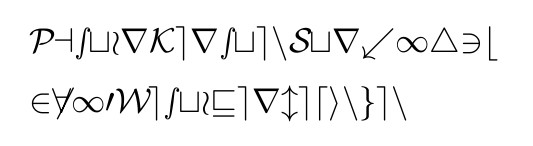

Impressum
Johannes Drees

[domain][at]gmail[dot]com
Disclaimer - rechtliche Hinweise - Datenschutzerklärung
- Warnhinweis zu Inhalten
Die kostenlosen und frei zugänglichen Inhalte dieser Webseite wurden mit größtmöglicher Sorgfalt erstellt. Der Anbieter dieser Webseite übernimmt jedoch keine Gewähr für die Richtigkeit und Aktualität der bereitgestellten kostenlosen und frei zugänglichen journalistischen Ratgeber und Nachrichten. Namentlich gekennzeichnete Beiträge geben die Meinung des jeweiligen Autors und nicht immer die Meinung des Anbieters wieder. Allein durch den Aufruf der kostenlosen und frei zugänglichen Inhalte kommt keinerlei Vertragsverhältnis zwischen dem Nutzer und dem Anbieter zustande, insoweit fehlt es am Rechtsbindungswillen des Anbieters.
- Externe Links
Diese Website enthält Verknüpfungen zu Websites Dritter ("externe Links"). Diese Websites unterliegen der Haftung der jeweiligen Betreiber. Der Anbieter hat bei der erstmaligen Verknüpfung der externen Links die fremden Inhalte daraufhin überprüft, ob etwaige Rechtsverstöße bestehen. Zu dem Zeitpunkt waren keine Rechtsverstöße ersichtlich. Der Anbieter hat keinerlei Einfluss auf die aktuelle und zukünftige Gestaltung und auf die Inhalte der verknüpften Seiten. Das Setzen von externen Links bedeutet nicht, dass sich der Anbieter die hinter dem Verweis oder Link liegenden Inhalte zu Eigen macht. Eine ständige Kontrolle der externen Links ist für den Anbieter ohne konkrete Hinweise auf Rechtsverstöße nicht zumutbar. Bei Kenntnis von Rechtsverstößen werden jedoch derartige externe Links unverzüglich gelöscht.
- Urheber- und Leistungsschutzrechte
Die auf dieser Website veröffentlichten Inhalte unterliegen dem deutschen Urheber- und Leistungsschutzrecht. Jede vom deutschen Urheber- und Leistungsschutzrecht nicht zugelassene Verwertung bedarf der vorherigen schriftlichen Zustimmung des Anbieters oder jeweiligen Rechteinhabers. Dies gilt insbesondere für Vervielfältigung, Bearbeitung, Übersetzung, Einspeicherung, Verarbeitung bzw. Wiedergabe von Inhalten in Datenbanken oder anderen elektronischen Medien und Systemen. Inhalte und Rechte Dritter sind dabei als solche gekennzeichnet. Die unerlaubte Vervielfältigung oder Weitergabe einzelner Inhalte oder kompletter Seiten ist nicht gestattet und strafbar. Lediglich die Herstellung von Kopien und Downloads für den persönlichen, privaten und nicht kommerziellen Gebrauch ist erlaubt.
Die Darstellung dieser Website in fremden Frames ist nur mit schriftlicher Erlaubnis zulässig.
- Besondere Nutzungsbedingungen
Soweit besondere Bedingungen für einzelne Nutzungen dieser Website von den vorgenannten Nummern 1. bis 4. abweichen, wird an entsprechender Stelle ausdrücklich darauf hingewiesen. In diesem Falle gelten im jeweiligen Einzelfall die besonderen Nutzungsbedingungen.
Quelle: Juraforum.de - Stand: 25.04.2021
- Weitere Hinweise
Abmahnungen ohne vorherigen Kontaktaufnahme werden als ungülig betrachtet. Sollte die Webseite, ein Inhalt, die Gestaltung oder die Domain nicht gesetzlichen Bestimmungen entsprechen oder die Rechte von dritten verletzten, wird eine vorherige Kontaktaufnahme ohne Kostennote erwartet. Das Entfernen von Seiten oder Inhalten mit Schutzrechtsverletzungen darf nicht ohne Zustimmung erfolgen. Sofern eine zu Recht beanstandete Schutzrechtsverletzung vorliegt, wird garantiert, dass diese diese behoben wird. Die Einschaltung eines Rechtsbeistand Ihrerseits ist dafür nicht erforderlich. Sollten Sie trotzdem Kosten ohne vorherige Kontaktaufnahme auslösen, werden die Ansprüche vollumfänglich zurückgeweisen und es wird eine Gegenklage erhoben, wegen des Verletzens der vorbenannten Bestimmungen.
- Adresseauskunft per Mail
Die Adresse des Webseitenbetreibers wird erst nach Anschrift per Mail bekannt gegeben, sofern sich die Person ausweist und unter Angabe der Kontakdaten (Telefon, Mail, Adresse) identifiziert, sowie den Betreff der Anfrage nennt. Die Anfrage wird, wie im Disclaimer Punkt “5. Weitere Hinweise” gehandhabt.
- Datenschutzerklärung
Personenbezogene Daten (nachfolgend zumeist nur „Daten“ genannt) werden von uns nur im Rahmen der Erforderlichkeit sowie zum Zwecke der Bereitstellung eines funktionsfähigen und nutzerfreundlichen Internetauftritts, inklusive seiner Inhalte und der dort angebotenen Leistungen, verarbeitet.
Gemäß Art. 4 Ziffer 1. der Verordnung (EU) 2016/679, also der Datenschutz-Grundverordnung (nachfolgend nur „DSGVO“ genannt), gilt als „Verarbeitung“ jeder mit oder ohne Hilfe automatisierter Verfahren ausgeführter Vorgang oder jede solche Vorgangsreihe im Zusammenhang mit personenbezogenen Daten, wie das Erheben, das Erfassen, die Organisation, das Ordnen, die Speicherung, die Anpassung oder Veränderung, das Auslesen, das Abfragen, die Verwendung, die Offenlegung durch Übermittlung, Verbreitung oder eine andere Form der Bereitstellung, den Abgleich oder die Verknüpfung, die Einschränkung, das Löschen oder die Vernichtung.
Mit der nachfolgenden Datenschutzerklärung informieren wir Sie insbesondere über Art, Umfang, Zweck, Dauer und Rechtsgrundlage der Verarbeitung personenbezogener Daten, soweit wir entweder allein oder gemeinsam mit anderen über die Zwecke und Mittel der Verarbeitung entscheiden. Zudem informieren wir Sie nachfolgend über die von uns zu Optimierungszwecken sowie zur Steigerung der Nutzungsqualität eingesetzten Fremdkomponenten, soweit hierdurch Dritte Daten in wiederum eigener Verantwortung verarbeiten.
Unsere Datenschutzerklärung ist wie folgt gegliedert:
I. Informationen über uns als Verantwortliche
II. Rechte der Nutzer und Betroffenen
III. Informationen zur Datenverarbeitung
I. Informationen über uns als Verantwortliche
Verantwortlicher Anbieter dieses Internetauftritts im datenschutzrechtlichen Sinne ist:
Der im Impressum genannte Betreiber.
Datenschutzbeauftragte/r beim Anbieter ist:
Der im Impressum genannte Betreiber.
II. Rechte der Nutzer und Betroffenen
Mit Blick auf die nachfolgend noch näher beschriebene Datenverarbeitung haben die Nutzer und Betroffenen das Recht
auf Bestätigung, ob sie betreffende Daten verarbeitet werden, auf Auskunft über die verarbeiteten Daten, auf weitere Informationen über die Datenverarbeitung sowie auf Kopien der Daten (vgl. auch Art. 15 DSGVO); auf Berichtigung oder Vervollständigung unrichtiger bzw. unvollständiger Daten (vgl. auch Art. 16 DSGVO); auf unverzügliche Löschung der sie betreffenden Daten (vgl. auch Art. 17 DSGVO), oder, alternativ, soweit eine weitere Verarbeitung gemäß Art. 17 Abs. 3 DSGVO erforderlich ist, auf Einschränkung der Verarbeitung nach Maßgabe von Art. 18 DSGVO; auf Erhalt der sie betreffenden und von ihnen bereitgestellten Daten und auf Übermittlung dieser Daten an andere Anbieter/Verantwortliche (vgl. auch Art. 20 DSGVO); auf Beschwerde gegenüber der Aufsichtsbehörde, sofern sie der Ansicht sind, dass die sie betreffenden Daten durch den Anbieter unter Verstoß gegen datenschutzrechtliche Bestimmungen verarbeitet werden (vgl. auch Art. 77 DSGVO). Darüber hinaus ist der Anbieter dazu verpflichtet, alle Empfänger, denen gegenüber Daten durch den Anbieter offengelegt worden sind, über jedwede Berichtigung oder Löschung von Daten oder die Einschränkung der Verarbeitung, die aufgrund der Artikel 16, 17 Abs. 1, 18 DSGVO erfolgt, zu unterrichten. Diese Verpflichtung besteht jedoch nicht, soweit diese Mitteilung unmöglich oder mit einem unverhältnismäßigen Aufwand verbunden ist. Unbeschadet dessen hat der Nutzer ein Recht auf Auskunft über diese Empfänger.
Ebenfalls haben die Nutzer und Betroffenen nach Art. 21 DSGVO das Recht auf Widerspruch gegen die künftige Verarbeitung der sie betreffenden Daten, sofern die Daten durch den Anbieter nach Maßgabe von Art. 6 Abs. 1 lit. f) DSGVO verarbeitet werden. Insbesondere ist ein Widerspruch gegen die Datenverarbeitung zum Zwecke der Direktwerbung statthaft.
III. Informationen zur Datenverarbeitung
Ihre bei Nutzung unseres Internetauftritts verarbeiteten Daten werden gelöscht oder gesperrt, sobald der Zweck der Speicherung entfällt, der Löschung der Daten keine gesetzlichen Aufbewahrungspflichten entgegenstehen und nachfolgend keine anderslautenden Angaben zu einzelnen Verarbeitungsverfahren gemacht werden.
Serverdaten
Diese Seite wird über Github Pages bei der GitHub Inc. gehostet. Auf die Erfassung, Speicherung und Übermittlung von Daten besteht keinerlei Einfluss durch den Webseitenbetreiber.
GitHub Inc. GitHub Inc., 88 Colin P Kelly Jr St, San Francisco, CA 94107, United States
Datenschutzerklärung: https://github.com/site/privacy
Cookies
Sofern auf dieser Webseite Cookies eingesetzt werden, kann es sich um nachfolgend aufgeführte Typen handeln.
a) Sitzungs-Cookies/Session-Cookies
Wir verwenden mit unserem Internetauftritt sog. Cookies. Cookies sind kleine Textdateien oder andere Speichertechnologien, die durch den von Ihnen eingesetzten Internet-Browser auf Ihrem Endgerät ablegt und gespeichert werden. Durch diese Cookies werden im individuellen Umfang bestimmte Informationen von Ihnen, wie beispielsweise Ihre Browser- oder Standortdaten oder Ihre IP-Adresse, verarbeitet.
Durch diese Verarbeitung wird unser Internetauftritt benutzerfreundlicher, effektiver und sicherer, da die Verarbeitung bspw. die Wiedergabe unseres Internetauftritts in unterschiedlichen Sprachen oder das Angebot einer Warenkorbfunktion ermöglicht.
Rechtsgrundlage dieser Verarbeitung ist Art. 6 Abs. 1 lit b.) DSGVO, sofern diese Cookies Daten zur Vertragsanbahnung oder Vertragsabwicklung verarbeitet werden.
Falls die Verarbeitung nicht der Vertragsanbahnung oder Vertragsabwicklung dient, liegt unser berechtigtes Interesse in der Verbesserung der Funktionalität unseres Internetauftritts. Rechtsgrundlage ist in dann Art. 6 Abs. 1 lit. f) DSGVO.
Mit Schließen Ihres Internet-Browsers werden diese Session-Cookies gelöscht.
b) Drittanbieter-Cookies
Gegebenenfalls werden mit unserem Internetauftritt auch Cookies von Partnerunternehmen, mit denen wir zum Zwecke der Werbung, der Analyse oder der Funktionalitäten unseres Internetauftritts zusammenarbeiten, verwendet.
Die Einzelheiten hierzu, insbesondere zu den Zwecken und den Rechtsgrundlagen der Verarbeitung solcher Drittanbieter-Cookies, entnehmen Sie bitte den nachfolgenden Informationen.
c) Beseitigungsmöglichkeit
Sie können die Installation der Cookies durch eine Einstellung Ihres Internet-Browsers verhindern oder einschränken. Ebenfalls können Sie bereits gespeicherte Cookies jederzeit löschen. Die hierfür erforderlichen Schritte und Maßnahmen hängen jedoch von Ihrem konkret genutzten Internet-Browser ab. Bei Fragen benutzen Sie daher bitte die Hilfefunktion oder Dokumentation Ihres Internet-Browsers oder wenden sich an dessen Hersteller bzw. Support. Bei sog. Flash-Cookies kann die Verarbeitung allerdings nicht über die Einstellungen des Browsers unterbunden werden. Stattdessen müssen Sie insoweit die Einstellung Ihres Flash-Players ändern. Auch die hierfür erforderlichen Schritte und Maßnahmen hängen von Ihrem konkret genutzten Flash-Player ab. Bei Fragen benutzen Sie daher bitte ebenso die Hilfefunktion oder Dokumentation Ihres Flash-Players oder wenden sich an den Hersteller bzw. Benutzer-Support.
Sollten Sie die Installation der Cookies verhindern oder einschränken, kann dies allerdings dazu führen, dass nicht sämtliche Funktionen unseres Internetauftritts vollumfänglich nutzbar sind.
Kontaktanfragen / Kontaktmöglichkeit
Sofern Sie per Kontaktformular oder E-Mail mit uns in Kontakt treten, werden die dabei von Ihnen angegebenen Daten zur Bearbeitung Ihrer Anfrage genutzt. Die Angabe der Daten ist zur Bearbeitung und Beantwortung Ihre Anfrage erforderlich - ohne deren Bereitstellung können wir Ihre Anfrage nicht oder allenfalls eingeschränkt beantworten.
Rechtsgrundlage für diese Verarbeitung ist Art. 6 Abs. 1 lit. b) DSGVO.
Ihre Daten werden gelöscht, sofern Ihre Anfrage abschließend beantwortet worden ist und der Löschung keine gesetzlichen Aufbewahrungspflichten entgegenstehen, wie bspw. bei einer sich etwaig anschließenden Vertragsabwicklung.
Als Email Dienst wird Google Mail verwendet. Bei der Kontaktaufnahme per Mail über den Emaildienst von Google kann hierbei nicht ausgeschlossen werden, dass eine Verarbeitung der so erhobenen Daten in den USA stattfindet. Auf die dabei erfassten Daten, die Speicherung und Übermittlung von Daten besteht keinerlei Einfluss, außer die über den Emaildienst angebotenen Funktionen.
Google Ireland Limited, Gordon House, Barrow Street, Dublin 4, Irland, ein Tochterunternehmen der Google LLC, 1600 Amphitheatre Parkway, Mountain View, CA 94043 USA
Datenschutzerklärung: https://policies.google.com/privacy
Verlinkung Social-Media über Grafik oder Textlink
Wir bewerben auf unserer Webseite auch Präsenzen auf den nachstehend aufgeführten sozialen Netzwerken. Die Einbindung erfolgt dabei über eine verlinkte Grafik des jeweiligen Netzwerks. Durch den Einsatz dieser verlinkten Grafik wird verhindert, dass es bei dem Aufruf einer Website, die über eine Social-Media-Bewerbung verfügt, automatisch zu einem Verbindungsaufbau zum jeweiligen Server des sozialen Netzwerks kommt, um eine Grafik des jeweiligen Netzwerkes selbst darzustellen. Erst durch einen Klick auf die entsprechende Grafik wird der Nutzer zu dem Dienst des jeweiligen sozialen Netzwerks weitergeleitet.
Nach der Weiterleitung des Nutzers werden durch das jeweilige Netzwerk Informationen über den Nutzer erfasst. Es kann hierbei nicht ausgeschlossen werden, dass eine Verarbeitung der so erhobenen Daten in den USA stattfindet.
Dies sind zunächst Daten wie IP-Adresse, Datum, Uhrzeit und besuchte Seite. Ist der Nutzer währenddessen in seinem Benutzerkonto des jeweiligen Netzwerks eingeloggt, kann der Netzwerk-Betreiber ggf. die gesammelten Informationen des konkreten Besuchs des Nutzers dem persönlichen Account des Nutzers zuordnen. Interagiert der Nutzer über einen „Teilen“-Button des jeweiligen Netzwerks, können diese Informationen in dem persönlichen Benutzerkonto des Nutzers gespeichert und ggf. veröffentlicht werden. Will der Nutzer verhindern, dass die gesammelten Informationen unmittelbar seinem Benutzerkonto zugeordnet werden, muss er sich vor dem Anklicken der Grafik ausloggen. Zudem besteht die Möglichkeit, das jeweilige Benutzerkonto entsprechend zu konfigurieren.
Folgende soziale Netzwerke werden in unsere Seite durch Verlinkung eingebunden:
facebook Facebook Ireland Limited, 4 Grand Canal Square, Dublin 2, Ireland, ein Tochterunternehmen der Facebook Inc., 1601 S. California Ave., Palo Alto, CA 94304, USA.
Datenschutzerklärung: https://www.facebook.com/policy.php
YouTube Google Ireland Limited, Gordon House, Barrow Street, Dublin 4, Irland, ein Tochterunternehmen der Google LLC, 1600 Amphitheatre Parkway, Mountain View, CA 94043 USA
Datenschutzerklärung: https://policies.google.com/privacy
Instagram Facebook Ireland Limited, 4 Grand Canal Square, Dublin 2, Ireland, ein Tochterunternehmen der Facebook Inc., 1601 S. California Ave., Palo Alto, CA 94304, USA.
Datenschutzerklärung: https://help.instagram.com/519522125107875
Google-Maps
In unserem Internetauftritt setzen wir Google Maps zur Darstellung unseres Standorts sowie zur Erstellung einer Anfahrtsbeschreibung ein. Es handelt sich hierbei um einen Dienst der Google Ireland Limited, Gordon House, Barrow Street, Dublin 4, Irland, nachfolgend nur „Google“ genannt.
Um die Darstellung bestimmter Schriften in unserem Internetauftritt zu ermöglichen, wird bei Aufruf unseres Internetauftritts eine Verbindung zu dem Google-Server in den USA aufgebaut.
Sofern Sie die in unseren Internetauftritt eingebundene Komponente Google Maps aufrufen, speichert Google über Ihren Internet-Browser ein Cookie auf Ihrem Endgerät. Um unseren Standort anzuzeigen und eine Anfahrtsbeschreibung zu erstellen, werden Ihre Nutzereinstellungen und -daten verarbeitet. Hierbei können wir nicht ausschließen, dass Google Server in den USA einsetzt.
Rechtsgrundlage ist Art. 6 Abs. 1 lit. f) DSGVO. Unser berechtigtes Interesse liegt in der Optimierung der Funktionalität unseres Internetauftritts.
Durch die so hergestellte Verbindung zu Google kann Google ermitteln, von welcher Website Ihre Anfrage gesendet worden ist und an welche IP-Adresse die Anfahrtsbeschreibung zu übermitteln ist.
Sofern Sie mit dieser Verarbeitung nicht einverstanden sind, haben Sie die Möglichkeit, die Installation der Cookies durch die entsprechenden Einstellungen in Ihrem Internet-Browser zu verhindern. Einzelheiten hierzu finden Sie vorstehend unter dem Punkt „Cookies“.
Zudem erfolgt die Nutzung von Google Maps sowie der über Google Maps erlangten Informationen nach den Google-Nutzungsbedingungen https://policies.google.com/terms?gl=DE&hl=de und den Geschäftsbedingungen für Google Maps https://www.google.com/intl/de_de/help/terms_maps.html.
Überdies bietet Google unter
https://adssettings.google.com/authenticated
https://policies.google.com/privacy
weitergehende Informationen an.
OpenStreetMap
Für Anfahrtsbeschreibungen setzen wir OpenStreetMap, einen Dienst der OpenStreetMap Foundation, St John’s Innovation Centre, Cowley Road, Cambridge, CB 4 0 WS, United Kingdom, nachfolgend nur „OpenStreetMap“ genannt, ein.
Bei Aufruf einer unserer Internetseiten, in die der Dienst OpenStreetMap eingebunden ist, wird durch OpenStreetMap ein Cookie über Ihren Internet-Browser auf Ihrem Endgerät gespeichert. Hierdurch werden Ihre Nutzereinstellungen und Nutzerdaten zum Zwecke der Anzeige der Seite bzw. zur Gewährleistung der Funktionalität des Dienstes OpenStreetMap verarbeitet. Durch diese Verarbeitung kann OpenStreetMap erkennen, von welcher Internetseite Ihre Anfrage gesendet worden ist und an welche IP- Adresse die Darstellung der Anfahrt übermittelt werden soll.
Rechtsgrundlage ist Art. 6 Abs. 1 lit. f) DSGVO. Unser berechtigtes Interesse liegt in der Optimierung und dem wirtschaftlichen Betrieb unseres Internetauftritts.
Sofern Sie mit dieser Verarbeitung nicht einverstanden sind, haben Sie die Möglichkeit, die Installation der Cookies durch die entsprechenden Einstellungen in Ihrem Internet-Browser zu verhindern. Einzelheiten hierzu finden Sie vorstehend unter dem Punkt „Cookies“.
OpenStreetMap bietet unter
https://wiki.osmfoundation.org/wiki/Privacy_Policy
weitere Informationen zur Erhebung und Nutzung der Daten sowie zu Ihren Rechten und Möglichkeiten zum Schutz Ihrer Privatsphäre an.
YouTube
In unserem Internetauftritt setzen wir YouTube ein. Hierbei handelt es sich um ein Videoportal der YouTube LLC., 901 Cherry Ave., 94066 San Bruno, CA, USA, nachfolgend nur „YouTube“ genannt.
YouTube ist ein Tochterunternehmen der Google Ireland Limited, Gordon House, Barrow Street, Dublin 4, Irland, nachfolgend nur „Google“ genannt.
Wir nutzen YouTube im Zusammenhang mit der Funktion „Erweiterter Datenschutzmodus“, um Ihnen Videos anzeigen zu können. Rechtsgrundlage ist Art. 6 Abs. 1 lit. f) DSGVO. Unser berechtigtes Interesse liegt in der Qualitätsverbesserung unseres Internetauftritts. Die Funktion „Erweiterter Datenschutzmodus“ bewirkt laut Angaben von YouTube, dass die nachfolgend noch näher bezeichneten Daten nur dann an den Server von YouTube übermittelt werden, wenn Sie ein Video auch tatsächlich starten.
Ohne diesen „Erweiterten Datenschutz“ wird eine Verbindung zum Server von YouTube in den USA hergestellt, sobald Sie eine unserer Internetseiten, auf der ein YouTube-Video eingebettet ist, aufrufen.
Diese Verbindung ist erforderlich, um das jeweilige Video auf unserer Internetseite über Ihren Internet-Browser darstellen zu können. Im Zuge dessen wird YouTube zumindest Ihre IP-Adresse, das Datum nebst Uhrzeit sowie die von Ihnen besuchte Internetseite erfassen und verarbeiten. Zudem wird eine Verbindung zu dem Werbenetzwerk „DoubleClick“ von Google hergestellt.
Sollten Sie gleichzeitig bei YouTube eingeloggt sein, weist YouTube die Verbindungsinformationen Ihrem YouTube-Konto zu. Wenn Sie das verhindern möchten, müssen Sie sich entweder vor dem Besuch unseres Internetauftritts bei YouTube ausloggen oder die entsprechenden Einstellungen in Ihrem YouTube-Benutzerkonto vornehmen.
Zum Zwecke der Funktionalität sowie zur Analyse des Nutzungsverhaltens speichert YouTube dauerhaft Cookies über Ihren Internet-Browser auf Ihrem Endgerät. Falls Sie mit dieser Verarbeitung nicht einverstanden sind, haben Sie die Möglichkeit, die Speicherung der Cookies durch eine Einstellung in Ihrem Internet-Browsers zu verhindern. Nähere Informationen hierzu finden Sie vorstehend unter „Cookies“.
Weitergehende Informationen über die Erhebung und Nutzung von Daten sowie Ihre diesbezüglichen Rechte und Schutzmöglichkeiten hält Google in den unter
https://policies.google.com/privacy
abrufbaren Datenschutzhinweisen bereit.
Vimeo
Zur Darstellung von Videos setzen wir auf unserer Internetseite „Vimeo“ ein. Hierbei handelt es sich um einen Dienst der Vimeo, LL C, 555 West 18 th Street, New York, New York 10011, USA, nachfolgend nur „Vimeo“ genannt, ein.
Teilweise erfolgt die Verarbeitung der Nutzerdaten auf Servern von Vimeo in den USA.
Rechtsgrundlage ist Art. 6 Abs. 1 lit. f) DSGVO. Unser berechtigtes Interesse liegt in der Qualitätsverbesserung unseres Internetauftritts.
Besuchen Sie eine Seite unseres Internetauftritts, in die ein Video eingebettet ist, wird zur Darstellung des Videos eine Verbindung zu den Servern von Vimeo in den USA hergestellt. Aus technischen Gründen ist es dabei notwendig, dass Vimeo Ihre IP - Adresse verarbeitet. Daneben werden aber auch Datum und Uhrzeit des Besuchs unserer Internetseiten erfasst.
Sollten Sie gleichzeitig bei Vimeo eingeloggt sein, während Sie eine unserer Internetseiten besuchen, in die ein Vimeo-Video eingebettet ist, weist Vimeo die so gesammelten Informationen womöglich Ihrem dortigen persönlichen Nutzerkonto zu. Wenn Sie das verhindern möchten, müssen Sie sich entweder vor dem Besuch unseres Internetauftritts bei Vimeo ausloggen oder Ihr Nutzerkonto bei Vimeo entsprechend konfigurieren.
Zum Zwecke der Funktionalität und Nutzungsanalyse setzt Vimeo den Webanalysedienst Google Analytics ein. Durch Google Analytics werden Cookies über Ihren Internet-Browser auf Ihrem Endgerät gespeichert und Informationen über die Benutzung unserer Internetseiten, in die ein Vimeo- Video eingebettet ist, an Google übersandt. Hierbei kann nicht ausgeschlossen werden, dass Google diese Informationen in den USA verarbeitet.
Sofern Sie mit dieser Verarbeitung nicht einverstanden sind, haben Sie die Möglichkeit, die Installation der Cookies durch die entsprechenden Einstellungen in Ihrem Internet-Browser zu verhindern. Einzelheiten hierzu finden Sie vorstehend unter dem Punkt „Cookies“.
Rechtsgrundlage ist Art. 6 Abs. 1 lit. f) DSGVO. Unser berechtigtes Interesse liegt in der Qualitätsverbesserung unseres Internetauftritts und in dem berechtigten Interesse von Vimeo , das Nutzerverhalten statistisch zu Optimierungs- und Marketingzwecken zu analysieren.
Vimeo bietet unter
weitere Informationen zur Erhebung und Nutzung der Daten sowie zu Ihren Rechten und Möglichkeiten zum Schutz Ihrer Privatsphäre an.
Muster-Datenschutzerklärung der Anwaltskanzlei Weiß & Partner